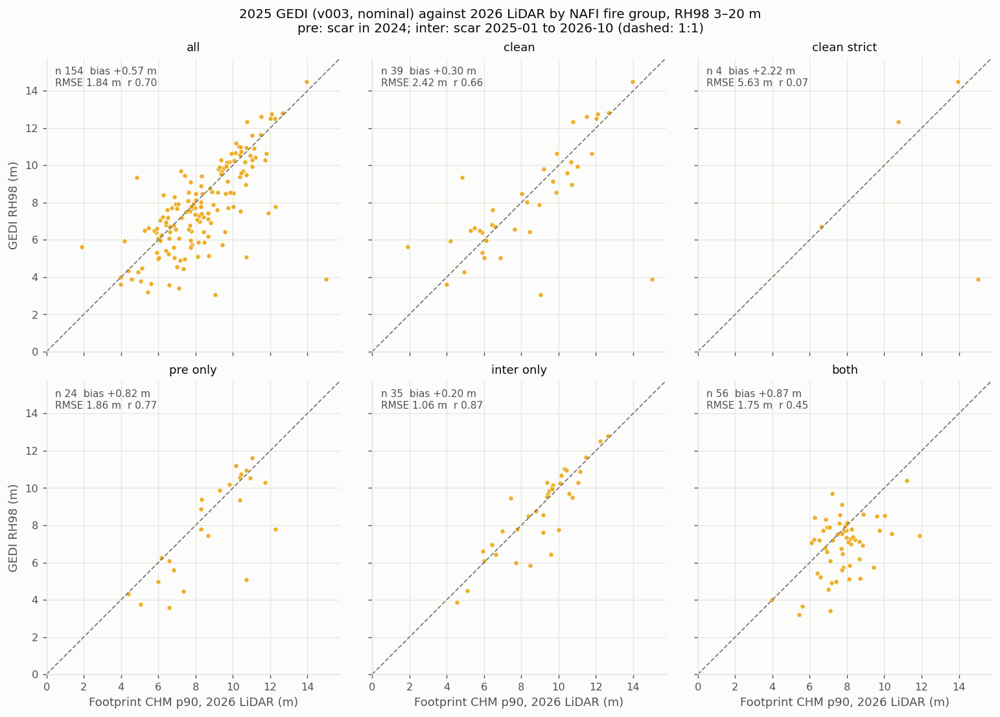
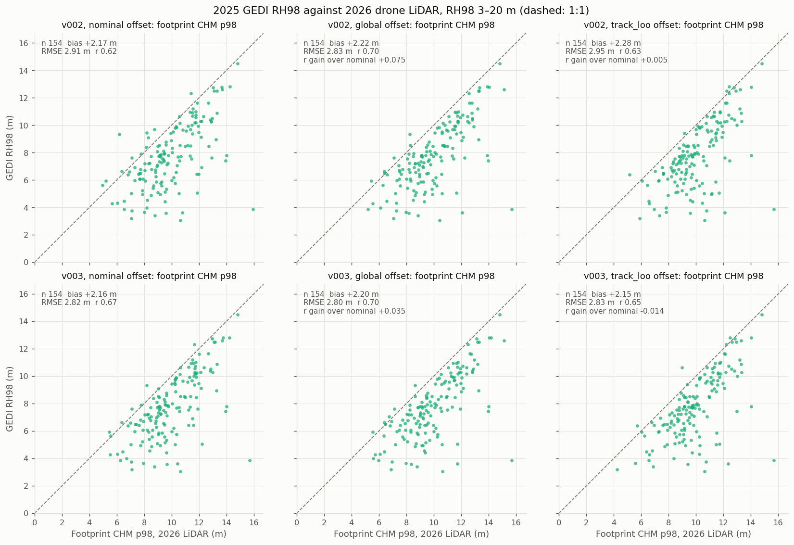
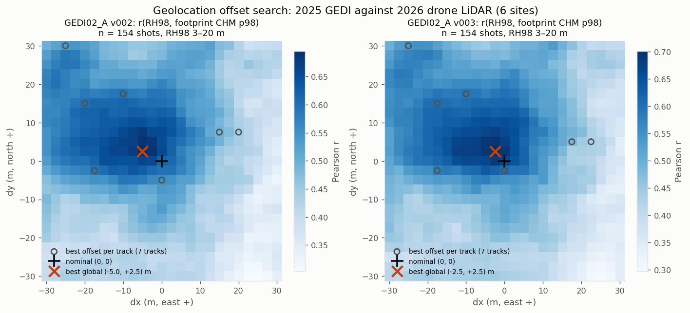
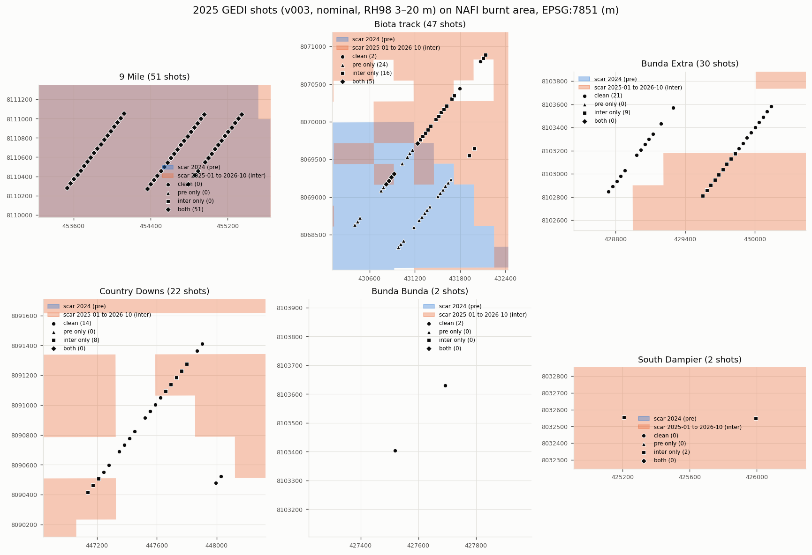

6 · Check against GEDI
GEDI L2A RH98 (spaceborne LiDAR, 25 m footprints) against the 2026 drone LiDAR CHM in the same footprint.
Result
| GEDI year | n shots | vs footprint CHM p90 | Report |
|---|---|---|---|
| 2025 (v003) | 154 | bias +0.57 m, RMSE 1.84 m, r 0.70 | wiggle, fire |
| 2024 | 15 | r 0.66 | earlier years |
| 2021 | 228 | r 0.74 | |
| 2019 | 19 | r 0.85 |
- RH98 corresponds to CHM p90, not p98: against p98 the bias is +2.2 m.
- No loss of skill over a 7-year gap. The LiDAR heights and GEDI agree at footprint scale.
- The best global geolocation offset is only 2.5–5 m and gains +0.04–0.08 in r. v003 positions are better than v002.
- Fire (NAFI) does not explain the error: fire-free shots r 0.66 against 0.70 for all.
- No GEDI data after 2025-07-09 (CMR, checked 2026-10-19). A direct GEDI check of the 2026 maps is not possible.
2025 GEDI against the 2026 LiDAR




Earlier GEDI years against the 2026 LiDAR


Every 2021 and 2024 shot burnt between the GEDI date and the LiDAR. The within-site fire-count effect is site-dependent (−0.57 to +0.39 m per burnt period).
Code
- gedi_site_shots.py (shots over the sites, v002 + v003),
gedi_wiggle.py (footprint CHM, offset search),
gedi_fire.py (NAFI groups); all take
--year. - Outputs:
lidar_2026\outputs\gedi\. GEDI for the 2019–2025 series:G:\python\GEDI\(see side roads).